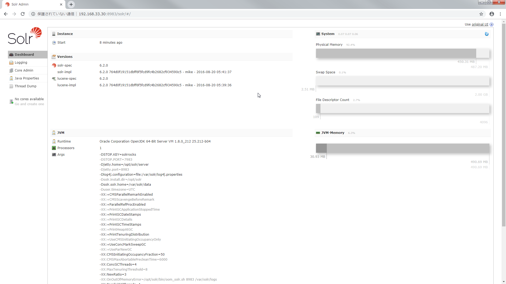
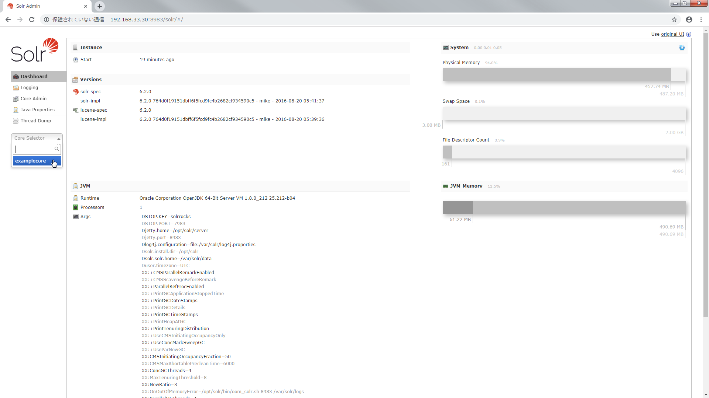
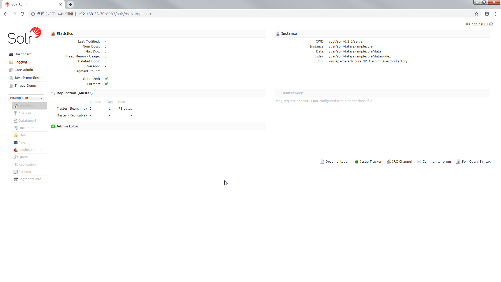
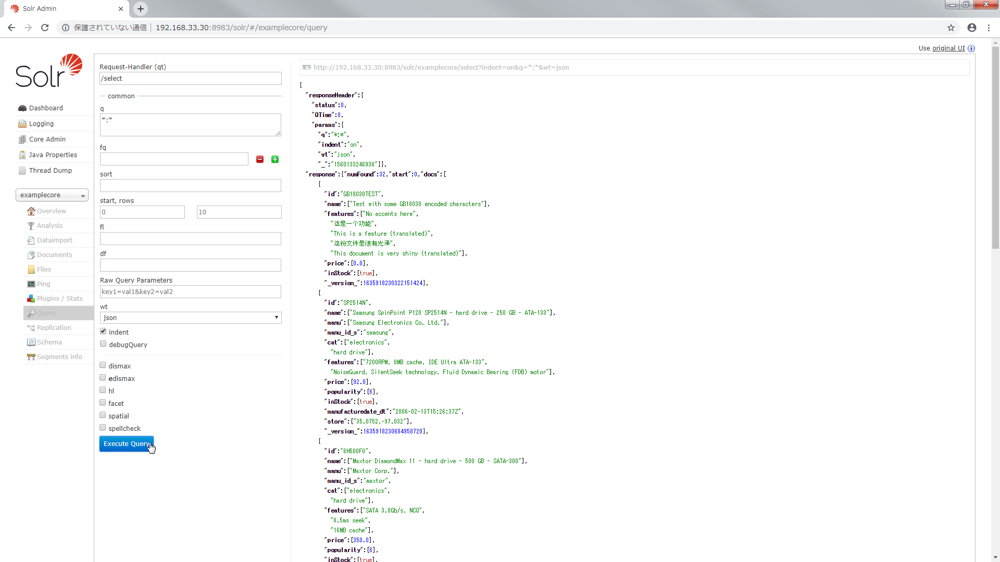

Solr(Standalone) を構築する
Vagrant で Solr を Standalone で構築しました．
Solr のバージョンは 6.2.0 です．
構成
Solr の構築はシェルでやることにしました．
D:\vagrant\solr-standalone
┣Vagrantfile
┗create_solr.sh
Vagrantfile
- OS は CentOS 7 を使用します．
- プロビジョナでシェルを実行します．
Vagrant.configure("2") do |config|
config.vm.box = "centos/7"
config.vm.network "private_network", ip: "192.168.33.30"
config.vm.provision :shell, path: "./create_solr.sh"
end
create_solr.sh
- Java をインストールします．
- Solr のアーカイブを取得して展開しシェルを実行します．
- Solr で使用する Port を開放します．
# Java をインストールする
yum install -y java-1.8.0-openjdk
# Solr を構築する
cd /usr/local/src/
yum install -y wget
wget https://archive.apache.org/dist/lucene/solr/6.2.0/solr-6.2.0.tgz
tar xzf solr-6.2.0.tgz
./solr-6.2.0/bin/install_solr_service.sh solr-6.2.0.tgz
# Port を開放する
systemctl enable firewalld.service
systemctl start firewalld.service
firewall-cmd --zone=public --add-port=8983/tcp --permanent
firewall-cmd --reload
Solr を構築する
Vagrantfile があるディレクトリで vagrant up します．
> pwd
D:\vagrant\solr-standalone
> vagrant up
これだけで Solr 導入済みの VM が完成しました．
http://192.168.33.30:8983/solr/#/ にアクセスすると Solr の管理画面にアクセスできます．

まだ core がないので作成します．
core を作成する
core とは RDB でいう schema に相当します．
core には Solr の設定(solrconfig.xml)や Solr に取り込むデータの型やフィールド，tokenizer 等の設定(managed_schema または schema.xml)が含まれています．
core を作成するには Solr をインストールしたディレクトリにあるシェルを実行します．
> vagrant ssh -c "sudo -u solr /opt/solr/bin/solr create -c examplecore"
Copying configuration to new core instance directory:
/var/solr/data/examplecore
Creating new core 'examplecore' using command:
http://localhost:8983/solr/admin/cores?action=CREATE&name=examplecore&instanceDir=examplecore
{
"responseHeader":{
"status":0,
"QTime":2701},
"core":"examplecore"}
/var/solr/data 配下に core が作成されたことが確認できます．
> vagrant ssh -c "sudo -u solr ls /var/solr/data"
examplecore solr.xml
> vagrant ssh -c "sudo -u solr ls /var/solr/data/examplecore"
conf core.properties data
core.properties には core の名前が記載されています．
> vagrant ssh -c "sudo -u solr cat /var/solr/data/examplecore/core.properties"
#Written by CorePropertiesLocator
#Mon Jun 10 02:06:21 UTC 2019
name=examplecore
core のルートディレクトリの下にある conf を見ると managed-schema や solrconfig.xml がありました．
> vagrant ssh -c "sudo -u solr ls /var/solr/data/examplecore/conf"
currency.xml elevate.xml lang managed-schema params.json protwords.txt solrconfig.xml stopwords.txt synonyms.txt
managed-schema を見てみます．
fieldType で Solr で扱うデータの型が定義されています．
analizer で tokenizer(文字列を解析して単語分割をおこなう) や filter(トークンを取り除いたり変換したりする処理をおこなう)が定義されています．
また analizer は fieldType ごとに設定できます．
field では core で扱うデータのフィールドを定義します．
dynamicField では field に定義していないフィールドを登録出来るようにします．
> vagrant ssh -c "sudo -u solr cat /var/solr/data/examplecore/conf/managed-schema"
<?xml version="1.0" encoding="UTF-8"?>
<!-- Solr managed schema - automatically generated - DO NOT EDIT -->
<schema name="example-data-driven-schema" version="1.6">
<uniqueKey>id</uniqueKey>
...
<fieldType name="int" class="solr.TrieIntField" positionIncrementGap="0" docValues="true" precisionStep="0"/>
<fieldType name="ints" class="solr.TrieIntField" positionIncrementGap="0" docValues="true" multiValued="true" precisionStep="0"/>
...
<fieldType name="text_ja" class="solr.TextField" autoGeneratePhraseQueries="false" positionIncrementGap="100">
<analyzer>
<tokenizer class="solr.JapaneseTokenizerFactory" mode="search"/>
<filter class="solr.JapaneseBaseFormFilterFactory"/>
<filter class="solr.JapanesePartOfSpeechStopFilterFactory" tags="lang/stoptags_ja.txt"/>
<filter class="solr.CJKWidthFilterFactory"/>
<filter class="solr.StopFilterFactory" words="lang/stopwords_ja.txt" ignoreCase="true"/>
<filter class="solr.JapaneseKatakanaStemFilterFactory" minimumLength="4"/>
<filter class="solr.LowerCaseFilterFactory"/>
</analyzer>
</fieldType>
...
<field name="id" type="string" multiValued="false" indexed="true" required="true" stored="true"/>
...
<dynamicField name="*_txt_ja" type="text_ja" indexed="true" stored="true"/>
...
</schema>
solrconfig.xml を見てみます．
version や キャッシュに関する情報等がありました(他にもいろいろありましたが今回は割愛させてください)．
> vagrant ssh -c "sudo -u solr cat /var/solr/data/examplecore/conf/solrconfig.xml"
<?xml version="1.0" encoding="UTF-8" ?>
...
<config>
...
<luceneMatchVersion>6.2.0</luceneMatchVersion>
...
<dataDir>${solr.data.dir:}</dataDir>
...
<query>
...
<queryResultCache class="solr.LRUCache"
size="512"
initialSize="512"
autowarmCount="0"/>
...
</query>
...
</config>
あっちこっちいきましたが 管理画面からも確認してみます．
http://192.168.33.30:8983/solr/#/ をリロードすると core が選択できるようになります．


今度は core にインデクシング(文書登録)をします．
core にインデクシングする
Solr で検索をするには文書のインデックスを core に登録する必要があります．
Solr では転置インデックスを使います．
転置インデックスにはどの単語がどの文書のどの位置にあるかが格納されています．
この転置インデックスを使うことで全ての文書をフルスキャンするより圧倒的に早く検索することができるというわけです．
Solr をインストールするとサンプルの文書が含まれているのでそれを利用します．
> vagrant ssh -c "sudo -u solr /opt/solr/bin/post -c examplecore /opt/solr/example/exampledocs/*.xml"
java -classpath /opt/solr/dist/solr-core-6.2.0.jar -Dauto=yes -Dc=examplecore -Ddata=files org.apache.solr.util.SimplePostTool /opt/solr/example/exampledocs/gb18030-example.xml /opt/solr/example/exampledocs/hd.xml /opt/solr/example/exampledocs/ipod_other.xml /opt/solr/example/exampledocs/ipod_video.xml /opt/solr/example/exampledocs/manufacturers.xml /opt/solr/example/exampledocs/mem.xml /opt/solr/example/exampledocs/money.xml /opt/solr/example/exampledocs/monitor2.xml /opt/solr/example/exampledocs/monitor.xml /opt/solr/example/exampledocs/mp500.xml /opt/solr/example/exampledocs/sd500.xml /opt/solr/example/exampledocs/solr.xml /opt/solr/example/exampledocs/utf8-example.xml /opt/solr/example/exampledocs/vidcard.xml
SimplePostTool version 5.0.0
Posting files to [base] url http://localhost:8983/solr/examplecore/update...
Entering auto mode. File endings considered are xml,json,jsonl,csv,pdf,doc,docx,ppt,pptx,xls,xlsx,odt,odp,ods,ott,otp,ots,rtf,htm,html,txt,log
POSTing file gb18030-example.xml (application/xml) to [base]
POSTing file hd.xml (application/xml) to [base]
POSTing file ipod_other.xml (application/xml) to [base]
POSTing file ipod_video.xml (application/xml) to [base]
POSTing file manufacturers.xml (application/xml) to [base]
POSTing file mem.xml (application/xml) to [base]
POSTing file money.xml (application/xml) to [base]
POSTing file monitor2.xml (application/xml) to [base]
POSTing file monitor.xml (application/xml) to [base]
POSTing file mp500.xml (application/xml) to [base]
POSTing file sd500.xml (application/xml) to [base]
POSTing file solr.xml (application/xml) to [base]
POSTing file utf8-example.xml (application/xml) to [base]
POSTing file vidcard.xml (application/xml) to [base]
14 files indexed.
COMMITting Solr index changes to http://localhost:8983/solr/examplecore/update...
Time spent: 0:00:01.348
http://192.168.33.30:8983/solr/#/examplecore/query にアクセスして Execute Query を実行すると文書がヒットしました．

curl でこのように検索することもできます．
$ curl -X GET "http://192.168.33.30:8983/solr/examplecore/select?q=*:*&fl=id&wt=json&indent=on" --noproxy 192.168.33.30
{
"responseHeader":{
"status":0,
"QTime":0,
"params":{
"q":"*:*",
"indent":"on",
"fl":"id",
"wt":"json"}},
"response":{"numFound":32,"start":0,"docs":[
{
"id":"GB18030TEST"},
{
"id":"SP2514N"},
{
"id":"6H500F0"},
{
"id":"F8V7067-APL-KIT"},
{
"id":"IW-02"},
{
"id":"MA147LL/A"},
{
"id":"adata"},
{
"id":"apple"},
{
"id":"asus"},
{
"id":"ati"}]
}}
これで Solr を構築して検索するところまで確認できました．
まとめ
Solr で検索できるまでにおこなう手順は以下．
- Solr を構築する．
- core を作成する．
- core にインデクシングをおこなう．
| 用語 | 内容 |
|---|---|
| Solr | ソーラー． 全文検索システム． 検索ライブラリ Lucene をベースにしている． |
| core | RDBでいう shema に相当する． core には Solr の設定や Solr に取り込むデータ型，フィールド，tokenizer 等を設定する． |
| managed-schema | Solr に取り込むデータ型，フィールド，tokenizer 等を定義する． |
| fieldType | Solr で扱うデータ型を定義する． |
| analizer | tokenizer や filter を定義する． fieldType ごとに analizer を定義できる． |
| tokenizer | 文字列を解析して単語分割をおこなう． |
| filter | トークンを取り除いたり，変換したりする処理をおこなう． |
| filed | Solr で扱うデータのフィールドを定義する． |
| dynamicField | filed に定義していないフィールドを登録出来るようにする． |
| solrconfig.xml | データの格納先やキャッシュの設定等 Solr の設定を定義する． |
| インデクシング | 文書を登録すること． Solr では core に文書を登録しインデックスを作成する． |
| 転置インデックス | どの単語がどの文書のどの位置にあるかが格納される． Solr は転置インデックスで検索することで全文書をフルスキャンするより圧倒的に早く検索できる． |
あとがき
core 作成，文書登録までやってしまいたい場合のシェルを以下に記載します．
# Java をインストールする
yum install -y java-1.8.0-openjdk
# Solr を構築する
cd /usr/local/src/
yum install -y wget
wget https://archive.apache.org/dist/lucene/solr/6.2.0/solr-6.2.0.tgz
tar xzf solr-6.2.0.tgz
./solr-6.2.0/bin/install_solr_service.sh solr-6.2.0.tgz
# core を作成する
sudo -u solr /opt/solr/bin/solr create -c examplecore
# 文書を登録する
sudo -u solr /opt/solr/bin/post -c examplecore /opt/solr/example/exampledocs/*.xml
# Port を開放する
systemctl enable firewalld.service
systemctl start firewalld.service
firewall-cmd --zone=public --add-port=8983/tcp --permanent
firewall-cmd --reload